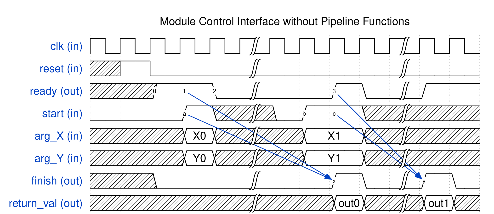
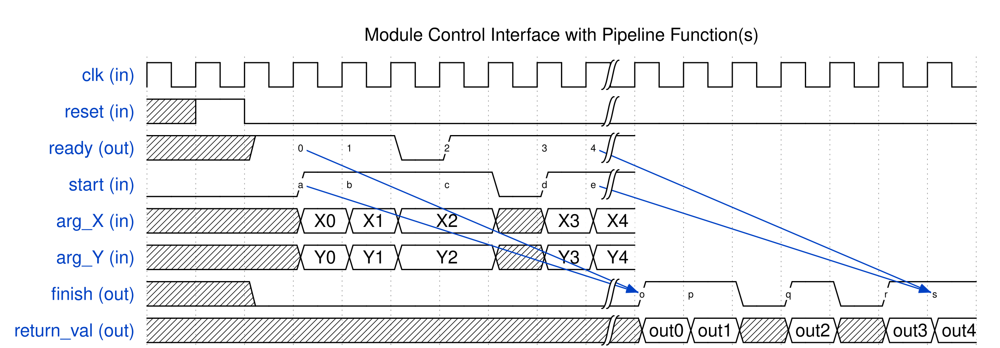
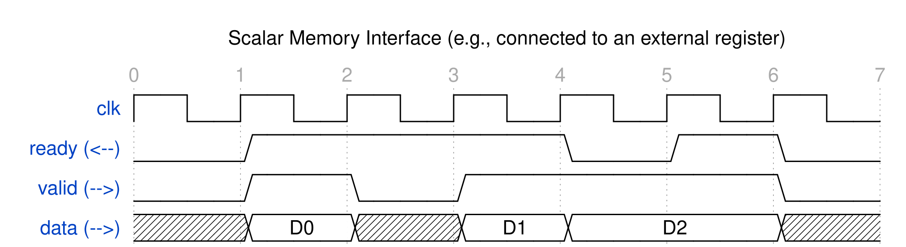

Top-Level RTL Interface¶
The SmartHLS-generated top-level RTL module can be instantiated and integrated with other HDL blocks, by following the protocols used by the SmartHLS’s RTL interface. This section describes the types of interfaces that are supported by SmartHLS, the default interface for each data type in C/C++, and how to customize the interface.
Module Control Interface¶
The top-level Verilog module generated by SmartHLS is always associated with a module control interface. The table below shows the interface ports of the control interface.
Port Name |
Direction |
Description |
|---|---|---|
clock |
IN |
The input clock signal to the RTL module. |
reset |
IN |
The input reset signal to the RTL module. |
ready |
OUT |
Indicates the readiness of the RTL module. ready is set to 1 when the RTL module is ready to start a new iteration (invocation) with a new set of inputs. |
start |
IN |
When ready is 1, setting start to 1 will start the execution of the RTL module; When ready is 0, the start signal is ignored by the RTL module. |
finish |
OUT |
finish is set to 1 for one clock cycle when the RTL module finishes. |
return_val |
OUT |
Holds the valid return value when finish is asserted. This signal does not exist if the top-level function has a void return type. |
Note
The top-level module starts a new iteration of execution upon the handshaking when both ready and start are high at a positive edge clock.
For a circuit containing pipelined functions, the ready signal can be high before the previous invocations have finished, allowing multiple invocations to overlap and run in parallel.
For circuits without pipelined functions, the ready signal is only asserted when the last invocation has finish.
The scalar arguments (described in the next section) should be provided at the same time when the start signal is set to high.
Timing Diagram (No Pipeline Functions)¶
The timing diagram above illustrates the behaviour of the module control interface when the generated circuit contains no pipelined circuits.
First, the ready signal comes out high after reset (label 0).
When the start signal becomes high at the next cycle (label a), the handshaking between ready and start (label 1 & a) occurs and the top-level module starts running.
Notice that at the same time as the start signal is asserted (label a), the argument inputs (i.e., arg_X and arg_Y) should also be provided to the top-level module. The scalar argument inputs are sampled by the top-level module when the handshaking occurs and will be used as the input for the current invocation.
Then the ready signal goes to low at the next cycle (label 2) to indicate the top-level module cannot accept a new invocation.
When the ready signal is low, the start signal is ignored by the top-level module. For example, the start signal becomes high at label b. The ready signal from the top-level module is still low at this cycle and hence a new function invocation won’t be started yet.
At label x, when the previous invocation finishes, the top-level module sets finish signal high for one clock cycle. In this clock cycle, the return value of the top-level function is available on the return_val port.
Meanwhile, the ready signal becomes high as the previous invocation finishes (label 3). A new handshaking with start occurs (label 3 & c), then the top-level function starts the second invocation and finishes at label y.
Timing Diagram (Pipeline Functions)¶
The timing diagram above illustrates the module control interface when the generated circuit contains pipelined function(s). In this case, the SmartHLS circuit can overlap the execution of multiple invocations, by starting a new invocation with a new set of inputs before previous invocations have finished.
There are a total of five invocations (or five ready & start handshakings, label 0-4 & a-e). As shown in the diagram, the new invocations can start without waiting for the prior invocations to finish.
Although the SmartHLS circuit can process multiple invocations in parallel, there are times when the SmartHLS circuit cannot start a new invocation. Such case can happen when the pipeline initiation internal is not 1 (i.e., the SmartHLS circuit cannot start a new invocation every clock cycle), or when the circuit is stalled waiting for resource/data to become available (e.g., waiting to read from an input FIFO). When the SmartHLS circuit can not start a new invocation, the ready signal will be set to low.
For example, the ready signal is low for one cycle before label 2, postponing the start of the third invocation until the ready signal is back to high at label 2 & c.
The external logic of the SmartHLS circuit can also lower the start signal to delay the start of a new invocation, as shown in the cycle before label d.
The invocations are always finished in the same order as they started. That is, the handshakings at label 0 & a, 1 & b, 2 & c, 3 & d, 4 & e, are corresponding to the completion at label o, p, q, r, s, respectively.
Scalar Argument¶
Each scalar argument of the top-level function (e.g., void foo(int scalar_arg);) becomes an input port of the top-level RTL module. Valid argument values should be provided on these input ports when the start signal is asserted. If the input port can be held valid and unchanged throughout the whole iteration of the execution, a stable option can be specified using the following pragma to inform SmartHLS and potentially save register usage in the generated module.
#pragma HLS interface argument(<SCALAR_ARGUMENT_NAME>) type(simple) stable(<false|true>)
Note that the type option is not configurable in the current release but still needs to be specified if you wish to add the stable option. If stable is false, the pragma is not necessary because SmartHLS assumes not stable by default.
As shown in the table below, each scalar argument corresponds to an input port of the top-level module,
Port Name |
Direction |
Description |
|---|---|---|
<ARGUMENT_NAME> |
IN |
The input value of the scalar argument. This input port is sampled by the SmartHLS module when both start and ready signals are 1. |
hls::FIFO Argument¶
SmartHLS provides a Streaming Library which includes a FIFO
template class for inferring the AXI4-stream like, ready-valid-data (RVD)
interface. When a hls::FIFO type argument is used by the top-level
function, a corresponding RVD interface is always generated.
The RVD interface is useful to transfer data from an upstream producer to a downstream consumer. The upstream sends the data along with a valid signal to indicate the data validity, while the downstream controls a ready signal to indicate its readiness to consume the data. A data is only transferred when both valid and ready signals are high at a positive clock edge.
As shown in the above timing diagram, three sets of data are transferred at the 2rd, 4th, and 6th positive clock edges. No data transfer occurs at the 3rd positive clock edge because the upstream does not assert the valid signal. The data “D2” is also not transferred at the 5th positive clock edge because the downstream back-pressures the upstream by lowering the ready signal.
The hls::FIFO template class is declared as
template<class T, bool pack = false> class FIFO;
The template argument T defines the data type, which can be a scalar data
type or a struct of multiple scalar types. The template argument pack
defines whether the scalar elements inside the struct should be packed into a
single data port. When pack is false, each scalar element has its own data
port, and all scalar elements in the struct share the same pair of ready and
valid ports.
A hls::FIFO argument must be either write-only or read-only. The data and
valid ports always have the same direction (output if write-only, input if
read-only), while the ready port has the opposite direction. The following
table shows the interface ports of the hls::FIFO argument depending on
the template parameters.
Template Parameter |
Port Name |
|
|---|---|---|
|
<ARG_NAME>
<ARG_NAME>_valid
<ARG_NAME>_ready
|
|
struct MyAxiStream { ap_uint<32> data; ap_uint<8> keep; ap_uint<1> last; }; |
|
<ARG_NAME>_data
<ARG_NAME>_keep
<ARG_NAME>_last
<ARG_NAME>_valid
<ARG_NAME>_ready
|
|
<ARG_NAME> // 41-bit wide.
<ARG_NAME>_valid
<ARG_NAME>_ready
|
|
In the struct type example above, the ap_uint template class is from
C++ Arbitrary Precision Data Types Library, which allows you
to define custom bit-width integers.
If you are familiar with the AXI4-stream interface, you may already notice that
the struct example (non-pack case) yields an AXI4-stream interface.
Indeed, this is how to infer AXI4-stream interface using hls::FIFO library.
Implementing A Custom AXI4 Master/Slave Using hls::FIFO¶
In addition to inferring an AXI4-stream interface as shown in the example
above, hls::FIFO can also be used to implement a custom AXI4 slave or
AXI4 master.
The AXI4 interface protocol has 5 channels, read address (AR), read data (R),
write address (AW), write data (W), and write response (B). Each channel is an
AXI4 stream interface and can be described in C++ as a hls::FIFO object.
For example, the read address channel has an address signal and a length
signal. The AXI4 channel can be implemented as following in C++ to get the
corresponding AR channel in the RTL interface.
struct RdAddrSignals { uint32_t addr; uint8_t len; };
void MyTopFunctoin (hls::FIFO<RdAddrSignals> ar) {
RdAddrSignals ar_sig;
ar_sig.addr = 0x2000;
ar_sig.len = 7; // 8-beat burst.
ar.write(ar_sig);
}
module MyTopFunction (
input clock,
input reset,
input ar_ready,
output ar_valid,
output [31:0] ar_addr,
output [7:0] ar_len
);
C++ Library for Custom AXI Master Interface¶
SmartHLS provides a C++ library for implementing the AXI4 master interfaces. The
library defines the AXI4 master interface in C++ and provides several API
functions for typical operations. For advanced users hoping to have more
fine-grained custom control, or additional AXI4 interface signals that are not
included in the library, the library can serve as a reference implementation
for customization (create your own AXI4 master library based on SmartHLS’s
axi_interface.hpp header file).
To create an AXI4 master interface using SmartHLS’s library, include the header file:
#include <hls/axi_interface.hpp>
To add an AXI4 master interface, you will need to
Create an instance of the
AxiInterfaceclass and specify the address width, data width and wstrb width through template parameters.Pass the created instance by reference to the top-level function. E.g.,
void MyTop(AxiInterface</* ADDR: */ ap_uint<32>, /* DATA: */ ap_uint<64>, /* WSTRB: */ ap_uint<8>> &master);Use the utility functions (APIs) defined in the header to control the AXI master interface.
Below are the API functions to access the AXI master interface.
/*
Send a read request starting from 'byte_addr' for 'burst_len' number of transfers.
- 'burst_len' can not be greater than 256 (max: 256) according to AXI4 specification.
- 'burst_type' is optional. The default value is 1 (incremental).
- 'transfer_size' is optional. The default value is automatically set to the full size matching T_DATA.
- The byte size per transfer equals to 2 to the power of transfer_size.
- e.g., if T_DATA is of an ap_uint<64> or uint64 type, the default transfer_size is 3.
*/
template <class T_ADDR, class T_DATA, class T_WSTRB>
void axi_m_read_req(AxiInterface<T_ADDR, T_DATA, T_WSTRB> &m,
T_ADDR byte_addr, ap_uint<9> burst_len,
ap_uint<2> burst_type = 1,
ap_uint<3> transfer_size = <SIZE_MATCHING_T_DATA>);
/*
Receive the read data (return value) for one read transfer.
- The function should be called after a read request is sent by 'axi_m_read_req'.
- For a read request with 'burst_len' number of transfers, this function
should be called for 'burst_len' number of times to receive all read data.
*/
template <class T_ADDR, class T_DATA, class T_WSTRB>
T_DATA axi_m_read_data(AxiInterface<T_ADDR, T_DATA, T_WSTRB> &m);
/*
Send a write request starting from 'byte_addr' for 'burst_len' number of transfers.
- 'burst_len' can not be greater than 256 (max: 256) according to AXI4 specification.
- 'burst_type' is optional. The default value is 1 (incremental).
- 'transfer_size' is optional. The default value is automatically set to the full size matching T_DATA.
- The byte size per transfer equals to 2 to the power of transfer_size.
- e.g., if T_DATA is of an ap_uint<64> or uint64 type, the default transfer_size is 3.
*/
template <class T_ADDR, class T_DATA, class T_WSTRB>
void axi_m_write_req(AxiInterface<T_ADDR, T_DATA, T_WSTRB> &m,
T_ADDR byte_addr, ap_uint<9> burst_len,
ap_uint<2> burst_type = 1,
ap_uint<3> transfer_size = <SIZE_MATCHING_T_DATA>);
/*
Send the write data 'val' for one write transfer.
- The function should be called after a write request is sent by 'axi_m_write_req'.
- For a write request with 'burst_len' number of transfers, this function
should be called for 'burst_len' number of times to send all write data.
- 'strb' acts as the byte-enable with each bit corresponds to a byte of the data.
- 'last' should be set to 1 if and only if the current function call
corresponds to the last transfer of the current write request.
*/
template <class T_ADDR, class T_DATA, class T_WSTRB>
void axi_m_write_data(AxiInterface<T_ADDR, T_DATA, T_WSTRB> &m,
T_DATA val, T_WSTRB strb, bool last);
/*
Receive the response acknowledgement for the last write request from the slave.
- The function should be called after all write data are sent by 'axi_m_write_data'.
- A return value of 0 means 'OK'; otherwise indicates an error.
*/
template <class T_ADDR, class T_DATA, class T_WSTRB>
ap_uint<2> axi_m_write_resp(AxiInterface<T_ADDR, T_DATA, T_WSTRB> &m);
The read and write operations are independent and therefore can be executed in parallel at the same time.
Same as the AXI4 slave interface, this AXI4 master interface library only supports the AXI4-lite protocol with additional support for bursting.
SW/HW Co-Simulation is supported for AXI master, but requires modeling the AXI slave’s responses to the AXI master in software before the kernel is called. An example of an AXI4 master interface tested with CoSim is shown below.
#include <hls/axi_interface.hpp>
#include <hls/ap_int.hpp>
#include <stdio.h>
using namespace hls;
void simple_master(AxiInterface<ap_uint<32>, ap_uint<64>, ap_uint<8>> &master) {
#pragma HLS function top
ap_uint<9> remaining = AXIM_MAX_BURST_LEN;
ap_uint<32> r_addr = 0;
ap_uint<32> w_addr = AXIM_MAX_BURST_LEN * 8;
#pragma HLS loop pipeline
for (; remaining != 0; --remaining) {
bool is_last = remaining == 1;
if (remaining == AXIM_MAX_BURST_LEN) {
// Request to read data in burst.
axi_m_read_req<ap_uint<32>, ap_uint<64>, ap_uint<8>>(master, r_addr, AXIM_MAX_BURST_LEN);
// Request to write data in burst.
axi_m_write_req<ap_uint<32>, ap_uint<64>, ap_uint<8>>(master, w_addr, AXIM_MAX_BURST_LEN);
}
// Write back the data we read + 1.
ap_uint<64> data = axi_m_read_data<ap_uint<32>, ap_uint<64>>(master);
axi_m_write_data<ap_uint<32>, ap_uint<64>, ap_uint<8>>(master, ap_uint<64>(data + 1), ap_uint<8>(0xFF), is_last);
}
// After the last write, read the response code.
ap_uint<2> bresp = axi_m_write_resp(master);
}
int main() {
AxiInterface<ap_uint<32>, ap_uint<64>, ap_uint<8>> axi_if(AXIM_MAX_BURST_LEN);
// Prepare the data to be read by the AXI master.
for (int i = 0; i < AXIM_MAX_BURST_LEN; i++) {
RdDataSignals<ap_uint<64>> r_sig;
r_sig.data = i;
r_sig.resp = 0;
r_sig.last = i == AXIM_MAX_BURST_LEN - 1;
axi_if.r.write(r_sig);
}
// Prepare the write response for the write from AXI master.
WrRespSignals b_sig;
axi_if.b.write(b_sig);
// Run the top-level function that will be synthesize to hardware.
simple_master(axi_if);
bool failed = false;
// Clear the write and read request.
ap_uint<32> r_addr = axi_if.ar.read().addr;
ap_uint<32> w_addr = axi_if.aw.read().addr;
// Check that the read and write addresses were as expected.
failed |= r_addr != 0;
failed |= w_addr != AXIM_MAX_BURST_LEN * 8;
// Read all of write data.
for (int i = 0; i < AXIM_MAX_BURST_LEN; ++i) {
// Check that write data is i + 1.
failed |= axi_if.w.read().data != i + 1;
}
// Now that all FIFOs have been cleared, the AXI interface could be prepared
// for more calls to the kernel..
if (!failed)
printf("PASS!\n");
else
printf("FAILED!\n");
return failed;
}